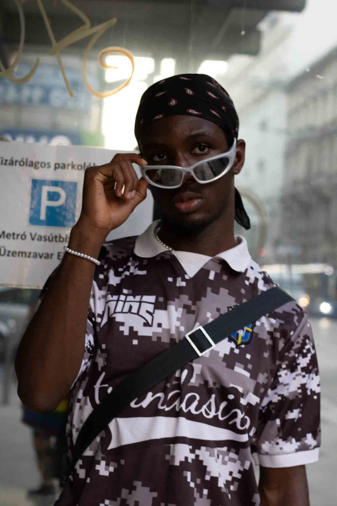
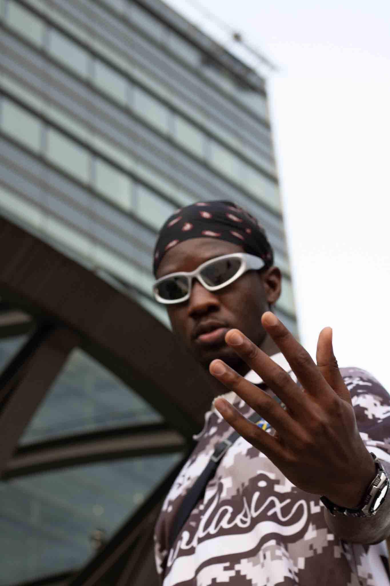
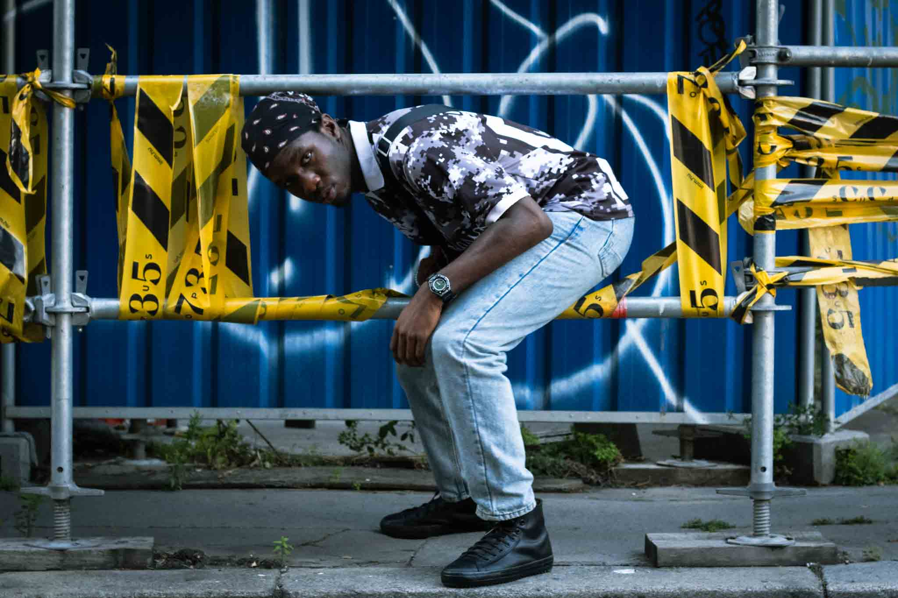
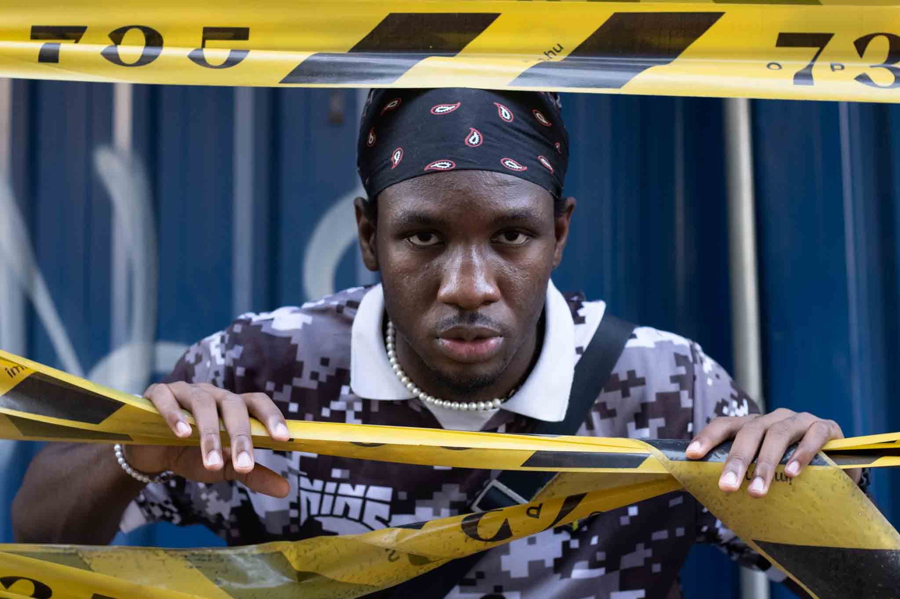

Summer 2023 was a year when I experienced editorial photography firsthand on the streets. During the summer I spent in Budapest, I connected with many models and organized photoshoots with them in various locations across the city.
These shoots, which I carried out on a voluntary basis or with very small budgets, were incredibly valuable for me in terms of understanding the industry and building new connections.
“His Rebel” is a fun and explorative shoot I did with Raphael Ogwuadi, a student and part-time model. We met one evening around sunset and spent time discovering metro stations and construction sites, capturing the raw and dynamic atmosphere of the city together.
To see more of my photography, please click the link.




